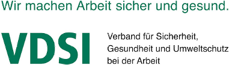
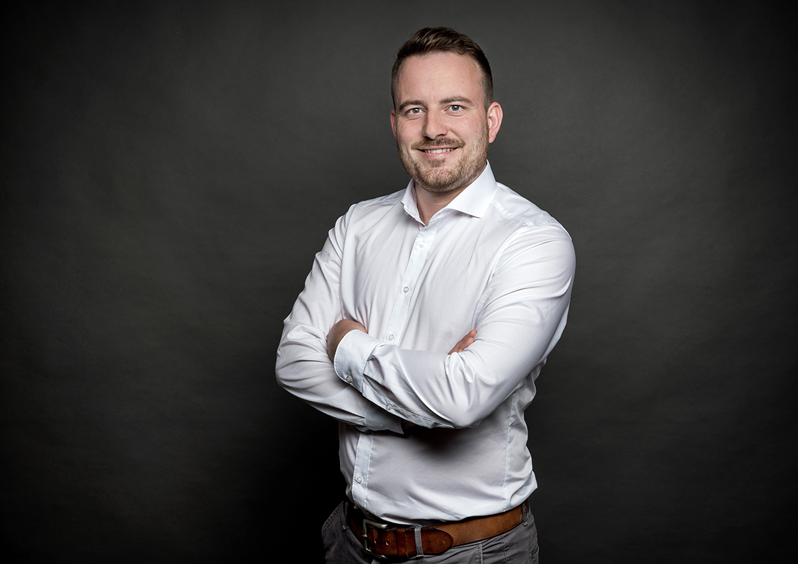

Sondermaschinen.
Sicheres Inverkehrbringen.
Sicheres Betreiben.
Ingenieurbüro Leimkühler
Ingenieurleistungen für CE-Kennzeichnung, Maschinensicherheit und Arbeitsschutz.
Als unabhängiger Ingenieur berate ich Sie in den Bereichen Maschinensicherheit, CE-Kennzeichnung und betrieblicher Arbeitsschutz. Ich verstehe mich als Dienstleistungspartner, der Aufgaben für Sie übernimmt, die Sie aus ökonomischen Aspekten oder aus fachlichen Gründen nicht bewältigen können oder wollen. Aufgrund meiner beruflichen Projekterfahrungen sowie meinen Kenntnissen in den Bereichen Maschinen- und Arbeitssicherheit unterstütze ich Sie bei dem Inverkehrbringen Ihrer Maschine sowie dem sicheren Betreiben von Alt-Maschinen. Eine umfassende Beratung und Betreuung meiner Kunden sind mir sehr wichtig. Daher stehe ich Ihnen von Anfang an in allen Belangen persönlich zur Seite.
CE-Kennzeichnung
Das Ingenieurbüro Leimkühler ist Ihr leistungsstarker Partner für das EG-Konformitätsbewertungsverfahren sowie
die CE-Kennzeichnung Ihrer Maschine. Ich berate und unterstütze Sie bei der Erreichung Ihrer Ziele.
Meine Arbeitsweise zeichnet sich durch eine diskrete, schnelle und einfache Projektabwicklung aus.
Durch Projekterfahrungen und Kenntnis der geltenden Regelungen kann ich Ihnen ein reibungsloses Inverkehrbringen garantieren.
Leistungen:
- Begleitung EG-Konformitätsbewertungsverfahren bis zur Inbetriebnahme
- Beratung in der Planungs- u. Konstruktionsphase
- Gesetzes-, Normen u. Richtlinienrecherche
- Erstellung der Risikobeurteilung nach DIN EN ISO 12100
- Ermittlung des geforderten Performance-Level (PLr)
- Erstellung der Original-Betriebsanleitung nach DIN EN ISO 20607
- Durchführung Interne Fertigungskontrolle nach MRL 2006/42/EG
- Zusammenstellung der technischen Dokumentation in prüffähigen Unterlagen
- Kontaktaufnahme zu akkreditieren Stellen für Baumusterprüfungen
- Erstellung der EG-Konformitätserklärung
Maschinensicherheit
Die Betriebssicherheitsverordnung fordert, dass nur Maschinen betrieben werden, die auch dem Stand der Technik entsprechen. Die Sicherheit muss daher auch bei Altmaschinen und unvollständigen Maschinen ohne CE-Kennzeichnung bzw. ohne ein EG-Konformitätsbewertungsverfahren gewährleistet sein.
Im Rahmen einer maschinenbezogenen Gefährdungs-beurteilung (GFB) ermittele ich alle relevanten Gefährdungen für Sie, sodass Ihre Alt-Maschine nach dem Umbau dem Stand der Technik entspricht und die Sie als Betreiber alle Dokumentationspflichten erfüllt haben.
Leistungen:
- Maschinenbegehung vor Ort
- Erstellung der Gefährdungsbeurteilung in Bezug auf die Maschinensicherheit gem. BetrSichV
- Entwicklung von Sicherheitskonzepten
- Umsetzungsbegleitung von der Planung bis zur Inbetriebnahme
- Kontrolle der Wirksamkeit der getroffenen Maßnahmen und Aktualisierung der Gefährdungsbeurteilung
Arbeitsschutz
Als beratender Sicherheitsingenieur übernehme ich für Sie die sicherheitstechnische Betreuung Ihres Unternehmens entsprechend den Vorgaben des Arbeitssicherheitsgesetzes (ASiG) und der DGUV Vorschrift 2. Denn als Unternehmen haben Sie unabhängig von Unternehmensform und Unternehmensgröße keine Wahl, Sie müssen eine Fachkraft für Arbeitssicherheit (Sifa) und einen Betriebsarzt bestellen
Leistungen:
- Auswahl des richtigen Betreuungsmodells (Regelbetreuung vs. Alternative bedarfsorientierte Betreuung)
- Sicherheitstechnische Betreuung Ihres Betriebs gem. DGUV-V2
- Einführung und Weiterentwicklung von Arbeitsschutzmanagementsystemen gem. ISO 45001
- Erstellung von Gefährdungsbeurteilungen
- Durchführung von Unterweisungen
- Vorbereitung und Moderation der ASA-Sitzung (Pflicht ab 21 MA)
- Kontaktherstellung zur arbeitsmedizinischen Betreuung
- Arbeitsmedizinische Betreuung durch Kooperationspartner
- Organisation arbeitsschutzspezifischer Prozesse
Netzwerke


Kontakt
Ingenieurbüro Leimkühler
Obere Findelstätte 7
49124 Georgsmarienhütte
Tel.: 05401/1593294
E-Mail: jan.leimkuehler@ib-leimkuehler.de
Öffnungszeiten Büro:
Mo. - Do.: 16:15 – 20:15 Uhr
Fr.: 14:00 – 20:15 Uhr
Sa.: 08:00 – 14:00 Uhr
Termine außerhalb der Bürozeiten nach Vereinbarung.
Ansprechpartner

Jan Leimkühler
Ing. MBA & Eng.
Sicherheitsingenieur, CE-Koordinator (TÜV)
Jan Leimkühler | XING